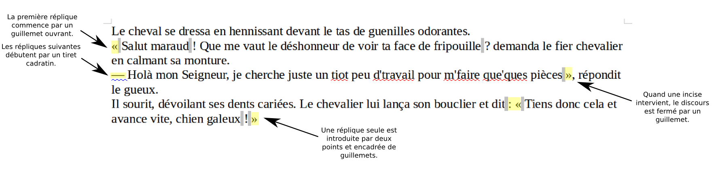
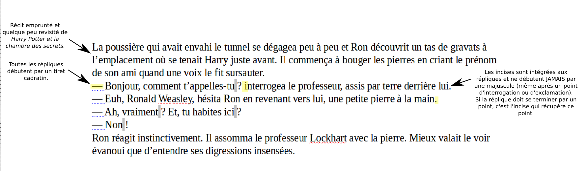

Les types de discours dans le récit
Un récit a besoin d’une dynamique forte pour embarquer le lecteur. Les discours peuvent aider à apporter cette dynamique. Il en existe deux types que nous allons voir dans cet article, le discours direct et le discours indirect. Bonne lecture!
Le discours direct
Ce sont des dialogues ou des monologues qui permettent de dynamiser le récit et de rendre plus vivants les personnages. Il ne faut cependant pas en abuser.
Le monologue, qui traduit les pensées d’un personnage, s’écrit principalement entre guillemets.
Il existe deux façons d’écrire convenablement le dialogue dans la langue française, avec des guillemets et des tirets, ou uniquement avec des tirets. Il est important de choisir l’une de ces deux règles et de l’appliquer tout au long du récit pour garder une cohérence et faciliter la lecture.
Les guillemets et les tirets
Pour voir l’image en taille réelle, cliquer ici.
{kind=link}
Attention à ne pas abuser des incises qui servent à indiquer l’état d’esprit ou la gestuelle des personnages. Inutile d’étouffer le lecteur d’indications sur le discours s’il n’y a que deux personnages en interaction par exemple.
Insérer un tiret cadratin
Sur Windows
Combinaison de la touche alt et des chiffres 0151 ou insérer trois symboles moins (-) à la suite + Espace.
Sur Mac
Combinaison des touches Option+Shift avec le moins (-) du clavier numérique.
Sur Linux
Combinaison des touches Ctrl+Shift/Maj+U, puis les chiffres 2014 et la touche Entrée
Insérer une espace insécable
Sur Windows
Combinaison de la touche alt et des chiffres 0160.
Sur Mac
Suivant la configuration de votre ordi, combinaison des touches Option + Espace ou Control + Espace. Sinon, consulter la table des caractères spéciaux.
Sur Linux
Il y a différentes combinaisons possibles suivant la configuration de votre ordi. Essayez Ctrl+Shift/Maj+Espace ou encore Ctrl+Espace… Sinon, consulter la table des caractères spéciaux ou configurer directement les combinaisons dans votre logiciel de traitement de texte.
Insérer une espace fine fixe
Malheureusement, je n’ai pas trouvé les différentes combinaisons. Je ne sais même pas si elles existent. Tout ce que je peux dire, c’est que ce type d’espace devrait être disponible dans les tables de caractères spéciaux. On ne désespère cependant pas qu’un jour prochain, une application d’écriture permettra d’insérer toutes les espaces correctes au bon endroit ! Dès que j’en prends connaissance, je vous le dis !
Les tirets
Pour écrire un discours, il est possible également d’utiliser uniquement les tirets cadratins.
Citation de Harry Potter et la Chambre des secrets de J.K. Rowling.
Pour voir l’image en taille réelle, cliquer ici.
{kind=link}
Quelques règles typographiques sont à respecter au niveau des retraits et des espacements. Pour plus de précisions et des astuces pour parvenir à une mise en page impeccable, je vous renvoie aux articles « Préparer son livre à l’impression ».
Il arrive parfois que la réplique d’un personnage soit si longue, que nous soyons obligés de passer à la ligne à l’intérieur même de cette réplique (pour éviter une indigestion au lecteur). Dans ce cas, certaines personnes préconisent de placer un guillemet ouvrant devant le nouveau paragraphe afin de spécifier qu’il fait bien partie du discours. Ce guillemet ne sera jamais refermé. Je trouve que c’est mal. Je préfère marquer la distinction entre un paragraphe dans la narration et un nouveau paragraphe dans le discours en jouant sur les espacements entre les paragraphes et les interlignes:
- les interlignes d’un paragraphe de narration sont identiques aux interlignes d’un paragraphe de discours
- les espacements au-dessus de la première réplique et en dessous de la dernière sont plus grands que les espacements entre deux paragraphes de narration
- à l’intérieur même du discours, les espacements entre les paragraphes sont identiques aux interlignes classiques du reste du récit
Ainsi, une réplique scindée en plusieurs paragraphes parce qu’elle est longue sera facilement repérable puisque ses différents paragraphes seront espacés de la même manière dans le discours, mais différemment par rapport à la narration.
Le discours indirect
Ce type de discours nourrit également la dynamique du texte, mais il permet aussi de faire une pause dans le dialogue pour ne pas trop perturber le lecteur et le recentrer sur l’intrigue.
Le discours indirect est introduit sans guillemets, ni tirets. On utilisera principalement les propositions de liaison « que » et « de ».
Jack demanda à John quel bon vent l’amenait. John lui répondit qu’il venait avec une tempête. Jack éluda, faisant remarquer que cela faisait longtemps qu’ils ne s’étaient vus. John lui rappela alors que la dernière fois, c’était quand il lui avait pris sa femme.
Attention à la transformation des temps ! Dans un discours direct, il y a de fortes chances que les personnages emploient le présent de l’indicatif pour parler. En revanche, dans un discours indirect, il vous faut retrouver les temps du récit employés tout au long de votre histoire.
Voici pour les discours, j’espère que tout est clair pour vous. Bon courage !